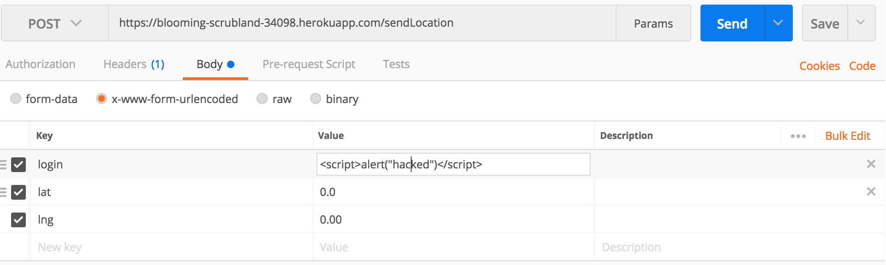
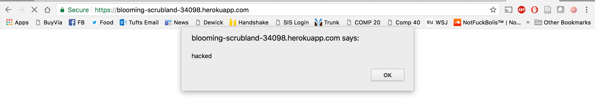
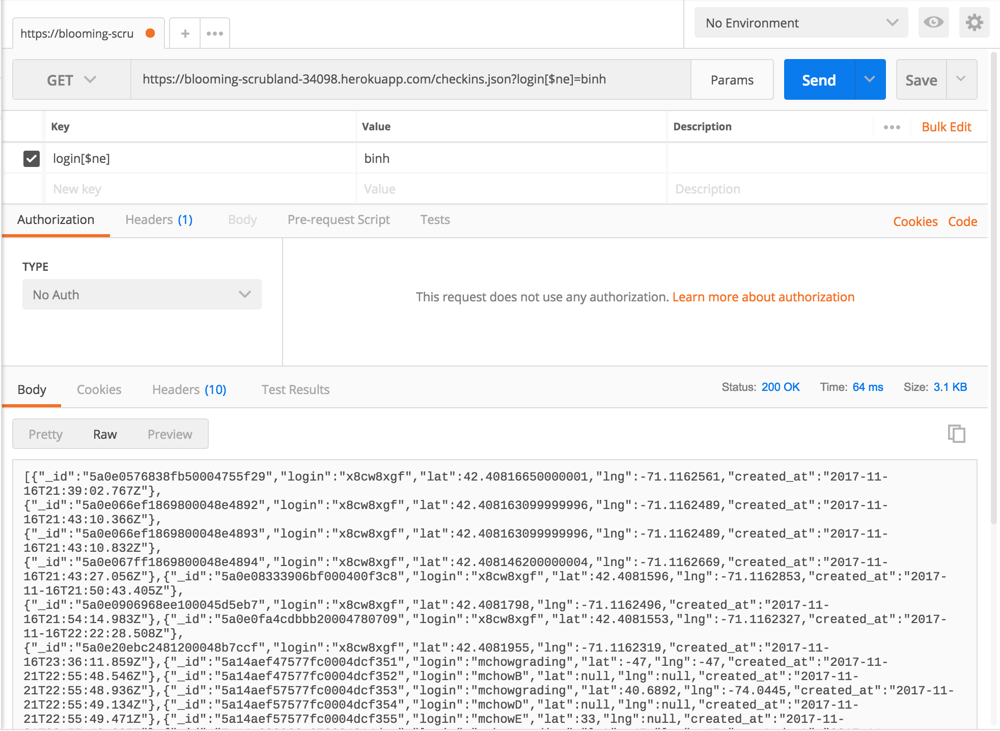
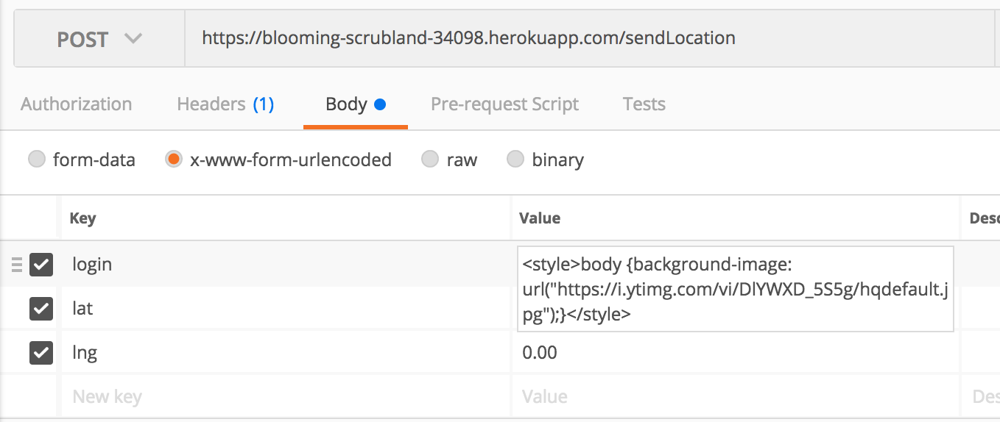

Introduction
The product is a server(https://blooming-scrubland-34098.herokuapp.com) that stores people's login and their location(latitude and longitude). When you send in your login, lat, and lng through a HTTP POST, you get back a list of all users who checked in and landmarks within a one mile radius. When you go to the server homepage(HTTP GET), there is a list of all of the checkins filtered by the most recent. Additionally, you can query the server to search for a particular individual. I am hired to explore the security vulnerabilities in the server and provide suggestions on how to patch up these issues.
Methodology
I first performed the attacks with the "black box" testing method. Then, I went through the source code to look for other vulnerabilities. Additionally, I used postman to make my post and get requests.
Abstract of Findings
Websites that allow user inputs are susceptible to security flaws if they don't provide proper input sanitation methods. If you allow users to input whatever they desire, they could use this opportunity to input malicious code that could make your server redirect you to another page and expose your privacy.
Issues Found
- Issue: Cross-site scripting - Alert
- Location: Server home page (https://blooming-scrubland-34098.herokuapp.com) and HTTP Post
- Severity of Issue: High - XSS poses high security risks because it could present users with fradulent web content and annoying messages. In this example, I used XSS to create an alert that will pop up each time you go to the homepage. Although this is only one method of XSS, hackers could use many other methods(like redirecting you to a malicious website through XSS) to harm you.
- Description of issue: Instead of inputting a legitimate username, I inputted.

From now on, when you go to the homepage, an alert will appear.
- Resolution: The user input should be stripped of special characters using .replace(/[^\w\s]/gi, '');

- Issue: MongoDB Injection
- Location: /checkins.json?login=query_phrase
- Severity of Issue: High - MongoDB injection allows the user to gain more information than is allowed. For example, the user could use this attack method to find the location of all users who checked into the server. This is a security flaw because it reveals private information of all of the users to the attacker.
- Description of issue: When you are using the /checkins.json?login=query_phrase and insert [$ne] after the login, the server will return all of the users who checked into the server. The [$ne] means that the server will return all of the data where the username is not equal to the query.
- Resolution: One option is to use the mongo-sanitize middleware to strip out any keys that start with '$' so that the user can no longer use the $ne operator.

- Issue: Input Injection
- Location: HTTP Post /sendLocation and Home page
- Severity of Issue: High - This injection allows you to take advantage of the user input and change the html home page by using the style tag. This is dangerous because it allows the attacker to change your website to anything they want. In 2017, this is extremely relevent with fake news(see image below). If attackers could change the viewing content of your website, they could use your website's reputation to get to your audience.
- Description of issue: In this example, I used the following code:

By using the style tag, I was able to change the page's background.
- Resolution: The user input should be stripped of special characters using .replace(/[^\w\s]/gi, '');
Conclusion:
Whenever you allow user input, you have to think of all the possible corner cases where hackers could exploit your website. In these three examples, hackers could take advantage of the blooming-scrubland-34098 by injecting inputs that include symbols(something usernames, lat, and lng don't need). To fix these corner cases, you needed to strip the input of symbols. Another way to add an extra layer of security is to limit the user's input. For example, you can limit a user's login to 20 characters(not many people have names that long).
References:
- https://github.com/tuftsdev/WebProgramming/blob/gh-pages/examples/nodejs/nodemongoapp/server.js
- https://zanon.io/posts/nosql-injection-in-mongodb